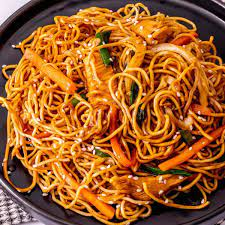

Chicken Chowmein

Chicken Chowmein
Chow mein is a traditional Chinese dish made with egg noodles and stir-fried veggies. We love adding a protein and our favorite is chicken, but you can try different meat or tofu. This dish is pan-fried so the noodles get a nice crisp to them and then tossed in a yummy sauce.
Go Back